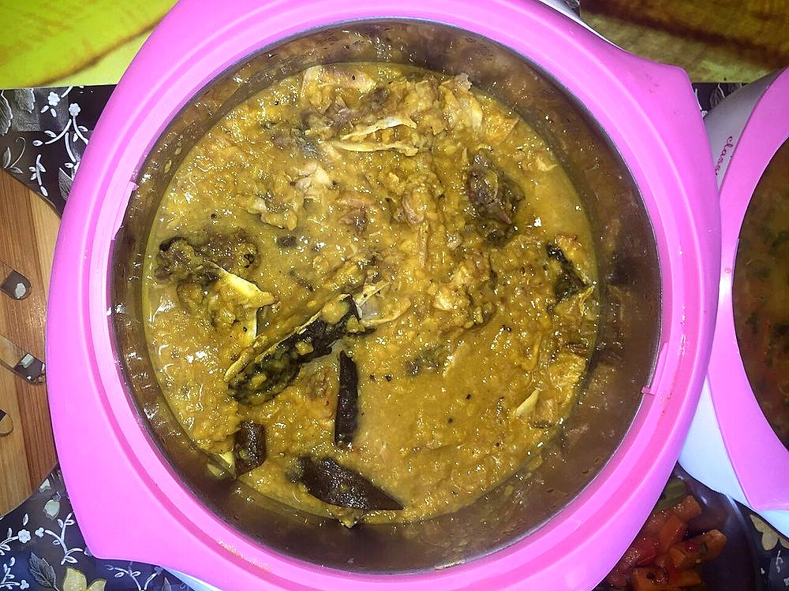

Contains: fish, mustard
Checked against the ingredient list for ten allergens: milk, egg, fish, crustaceans, tree nuts, peanuts, sesame, mustard, soy and gluten. Brands vary, so read the label on anything new to you.
Ingredients
Quantities for 4.
- 1 large head, halved, plus 200g of steaks Fishrohu or katla; the head is the dish, not a garnish
- 150g, washed and drained Basmati Ricegobindobhog is traditional; any short fragrant rice works
- 2, cubed Potato
- 2, sliced Onion
- 1 tbsp paste Ginger
- 1 tsp Turmeric
- 1 tsp Cumin Powder
- 2 Bay Leaf
- 1 tsp Garam Masala
- 4, slit Green Chilli
- 5 tbsp Mustard Oil
- 1 tsp Sugar
- to taste Salt
Cookware
stovetop
Before you start
- The head is fried hard first and then broken up in the pot. That breaking is the technique.
- Heat the mustard oil to smoking and let it cool a little before cooking. Raw mustard oil is harsh.
Method
- Rub the fish head with turmeric and salt and fry in the hot mustard oil until dark and crisp. Break it into pieces in the pan.
- Fry the potato cubes until golden. Lift out.
- Temper the bay leaves, add the onion and fry until brown, then the ginger paste and cumin.
- Return the fish and potato, add the drained rice and toss 3 minutes so every grain is coated in oil.
- Add 400ml hot water, cover and cook 15 minutes until the rice is done and almost dry.
- Finish with the garam masala, green chillies and sugar. Rest 10 minutes.
Storage
Keeps 2 days refrigerated. It contains cooked rice and fish, so cool it quickly and refrigerate within two hours. Reheat thoroughly.
Nutrition Medium estimate
Medium protein: 16 g a serving, 14% of the calories
| Per serving257 g | Per 100 g | |
|---|---|---|
| Calories | 449 kcal | 175 kcal |
| Protein | 15.7 g | 6 g |
| Carbohydrate | 53.5 g | 21 g |
| of which sugars | 4.5 g | 2 g |
| Fibre | 3.9 g | 2 g |
| Fat | 19.3 g | 8 g |
| of which saturated | 2.4 g | 1 g |
| of which unsaturated | 15.2 g | 6 g |
Ingredients given to taste count as zero, so the real figures run a little higher. Nearest database match used for garam masala. Estimated from raw ingredients using USDA FoodData Central.
Written and checked against sources, not cooked in a test kitchen. Times, yields, allergens and nutrition are worked out rather than measured, so use your own judgement on doneness and on storing. More in About.